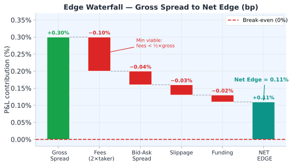

Statistical Arbitrage · บทที่ 19
Cost Analysis & Edge: คำนวณ Net Edge ก่อนเทรด
Gross spread − 2×fee (round-trip) − bid/ask − slippage − funding − legging buffer = Net edge
แก่นของบทนี้ — อ่านก่อน
Stat arb มีต้นทุนซ่อนอยู่หลายชั้น — signal ที่ดูมี edge 0.20% อาจมี net edge ลบหลัง cost หักออกทั้งหมด คำนวณก่อนเสมอ — ห้าม assume
$$\text{Net Edge} = \underbrace{\sigma_{\varepsilon}}_{\text{gross}} - \underbrace{2f_{\text{taker}} + \text{bid-ask} + \text{slippage} + \text{funding}}_{\text{costs}}$$
19.1 Edge Waterfall Diagram

Waterfall chart: แต่ละ cost component ลดลงจาก gross spread ของ 0.20% — เหลือ net edge เพียง 0.09%
19.2 Fee Structure
Exchange Maker Fee Taker Fee หมายเหตุ
Bybit Perp −0.025% (rebate) +0.055% VIP levels ลด taker ได้ Lighter Perp −0.010% +0.030% clob-based, faster fills Round trip cost (2 takers) (0.055+0.030)×2 = 0.17% Round trip cost (2 makers) rebate: −0.07% (receive)
Maker vs Taker Strategy
ถ้า latency ไม่ critical → ใช้ limit order (maker) ทั้งคู่ — ลด cost จาก −0.17% เป็น −0.03% ต่อ round trip แต่ risk partial fill และ leg mismatch เพิ่มขึ้น
19.3 Bid-Ask Spread Cost
Cost per leg = (Ask − Bid) / 2 = half-spread
สำหรับ 2 legs round trip:
Total bid-ask cost = half-spread_A + half-spread_B
ตัวอย่าง Bybit BTC:
Bid = 65,000, Ask = 65,002
Half-spread = $1 = 1/65,000 = 0.0015%
Lighter BTC:
Bid = 64,998, Ask = 65,001
Half-spread = $1.50 = 0.0023%
Total: 0.0015% + 0.0023% = 0.0038% ต่อ direction
Round trip (entry + exit): 0.0076% ≈ 0.008%
19.4 Slippage Model
Market impact (slippage) เพิ่มขึ้นตาม size ที่เทียบกับ average daily volume:
Slippage ≈ σ_daily × sqrt(size / ADV)
โดย:
σ_daily = daily volatility ของ asset
size = ขนาด order (notional)
ADV = average daily volume (notional)
ตัวอย่าง:
σ_daily = 0.02 (2%)
size = $100,000
ADV = $500,000,000 (Bybit BTC perp ~$500M/day)
Slippage = 0.02 × sqrt(100,000/500,000,000)
= 0.02 × 0.014 = 0.00028 = 0.028%
19.5 Funding Cost
Funding cost ต่อ 8h = |funding_rate| × notional
Total funding cost = funding_rate × hold_periods × notional
ตัวอย่าง:
Funding rate = 0.01% ต่อ 8h (positive → longs จ่าย)
Hold time = 2 funding periods = 16h
Notional = $100,000
Cost (ถ้า short perp) = +0.01% × 2 × $100,000 = +$20 (รับ)
Cost (ถ้า long perp) = −0.01% × 2 × $100,000 = −$20 (จ่าย)
Funding Direction ขึ้นกับ Position
ถ้า basis > 0 และ short perp → รับ funding (ลด cost)
19.6 Legging Buffer
Legging risk = ความเสี่ยงจากช่วงเวลาระหว่าง fill leg A และ fill leg B
ในช่วงนั้น position เป็น single-leg → exposed ต่อ market movement
Legging buffer estimate:
buffer = σ_spread × sqrt(avg_fill_latency_s / seconds_per_period)
ตัวอย่าง:
σ_spread = 0.05% per period
avg_fill_latency = 0.5 วินาที
seconds_per_period = 60 วินาที (1 นาที)
buffer = 0.05% × sqrt(0.5/60) = 0.05% × 0.091 = 0.0045%
19.7 Break-even Analysis — Minimum Viable σ_stat
σ_stat ที่ใช้ในสมการด้านล่างมาจาก Objective-Driven Design ใน บทที่ 4.5 — กลยุทธ์ Hybrid ต้องการ σ_stat ที่ "Optimal Substantial" (ไม่ต่ำเกินจน edge หมด ไม่สูงเกินจน half-life ยาวเกิน) สมการ Breakeven ด้านล่างคือเส้นขอบล่างของช่วง tradeable นั้น
Minimum σ_stat เพื่อให้ trade คุ้มค่า:
Break-even σ = total_cost / (z_entry − z_exit)
ตัวอย่าง:
total_cost = 0.11%
z_entry = 2.0, z_exit = 0.5
σ_stat = z × σ_spread → spread ที่ entry = 2.0 × σ_spread
Break-even: 0.11% / (2.0 − 0.5) = 0.073%
→ ต้องการ σ_spread ≥ 0.073% เพื่อให้ entry at z=2.0 cover cost
→ ถ้า σ_spread = 0.05% → entry spread = 0.10%, net edge = −0.01% (ไม่ trade!)
19.8 Pseudo-code compute_edge()
def compute_edge(spread_at_entry_pct, sigma_spread_pct,
entry_z, exit_z,
fee_a=0.00055, fee_b=0.00030,
half_spread_a=0.00002, half_spread_b=0.00003,
size=100_000, adv=500_000_000, sigma_daily=0.02,
funding_per_8h=0.0001, hold_periods=1,
avg_fill_latency_s=0.5, seconds_per_period=60):
gross = spread_at_entry_pct / 100.0 # convert to decimal
# Fee cost (round trip, taker both sides)
fee_cost = (fee_a + fee_b) * 2
# Bid-ask cost (round trip)
ba_cost = (half_spread_a + half_spread_b) * 2
# Slippage cost
slip_cost = sigma_daily * sqrt(size / adv) * 2 # entry + exit
# Funding cost (funding_per_8h in decimal fraction, e.g. 0.0001 = 0.01%/8h)
fund_cost = funding_per_8h * hold_periods
# Legging buffer
leg_buffer = (sigma_spread_pct/100) * sqrt(avg_fill_latency_s/seconds_per_period)
total_cost = fee_cost + ba_cost + slip_cost + fund_cost + leg_buffer
net_edge = gross - total_cost
breakeven_sigma = total_cost / (entry_z - exit_z) * 100 # as percent
return {
"gross_pct": gross * 100,
"total_cost_pct": total_cost * 100,
"net_edge_pct": net_edge * 100,
"breakeven_sigma_pct": breakeven_sigma,
"viable": net_edge > 0
}
19.9 Running Example — Bybit↔Lighter Cost Breakdown
🔁 Running Example: BTC Spread Trade Cost Analysis
Component Calculation Cost (bps)
Gross spread at entry (z=2.0, σ=7.5bps) 2.0 × 7.5bps +15.0 bps Taker fee Bybit (0.055% × 2) round trip −11.0 bps Taker fee Lighter (0.030% × 2) round trip −6.0 bps Bid-ask spread (both venues) 2 × half-spread −0.8 bps Slippage ($100k on $500M ADV) σ×sqrt(size/ADV) −0.3 bps Funding (1 period, 0.01%/8h) hold 8h −1.0 bps Legging buffer (0.5s latency) σ×sqrt(0.5/60) −0.5 bps Net Edge −4.6 bps (−0.046%, LOSS)
สรุป: Gross 15bps แต่ taker cost (17bps) + อื่น ๆ (2.6bps) = 19.6bps → net = −4.6bps → ห้ามเทรดในสภาพ retail taker — ต้องใช้ maker tier (rebate) หรือรอจน z ≥ 3.3
Break-even σ: total cost 19.6bps / (2.0 − 0.5) = 13.1bps → ต้องการ σ_spread ≥ 13.1bps (σ จริง = 7.5bps ❌ ไม่ผ่าน) → ลด cost ด้วย maker pricing หรือเลือก venue ที่ fee ต่ำกว่า
Practitioner Note — Computing Net Edge
Compute net edge before EVERY trade, not just at strategy launch. Use realized slippage from last 20 executions (not theoretical model) to update slippage estimate. If net edge < 0.05% → skip the trade even if z-score > 2.0 — discipline of not trading near-zero edge is more valuable than capturing marginal signals. Track edge decay over time: if average net edge drops 50% over 30 days → pair may be crowded.
Model Risk — สมมติฐานความเสถียรของต้นทุน
การคำนวณ edge ตั้งสมมติฐานว่าต้นทุนคงที่ — แต่ในความเป็นจริง taker fee อาจเปลี่ยนแปลงได้ภายใน 24 ชั่วโมง, bid-ask spread อาจกว้างขึ้น 5–10 เท่าในช่วง volatility สูง, และ funding rate อาจกลับเครื่องหมาย กลยุทธ์ที่มี net edge 0.11% กับต้นทุน 0.10% มี margin เหลือน้อยมาก — ถ้าค่าธรรมเนียมเพิ่ม 20% กลยุทธ์นั้นจะขาดทุนทันที ควรคำนวณ "edge under stress" เสมอ: net edge จะเป็นเท่าไหร่ถ้า slippage เพิ่มสองเท่าและ funding rate กลับเครื่องหมาย?
19.10 แบบฝึกหัด
แบบฝึกหัดบทที่ 19
ข้อ 1: ถ้า σ_spread = 3bps และ total cost = 4bps — ควรเทรดที่ z=2.0 ไหม?
คำตอบ: ไม่ควร — gross spread ที่ z=2.0 = 2.0 × 3bps = 6bps แต่ total cost = 4bps → net edge = 2bps
แม้ net edge เป็นบวก แต่ risk-adjusted มันเล็กมาก margin of safety ต่ำ
ข้อ 2: วิธีลด fee cost จาก 17bps (taker) เป็น rebate (maker) — ทำได้อย่างไร?
คำตอบ: ใช้ limit order (maker) แทน market order (taker)
Maker fee Bybit: −0.025% (rebate) แทน +0.055% → ประหยัด 0.080%/side = 16bps round-trip
Maker fee Lighter: −0.010% (rebate) แทน +0.030% → ประหยัด 0.040%/side = 8bps round-trip
Net saving: 16 + 8 = 24bps round-trip (จาก +17bps → −7bps rebate)
Trade-off: limit order อาจไม่ถูก fill ถ้า spread เคลื่อนที่ออกไปก่อน → ต้องออกแบบ order management ให้ดี
ข้อ 3: ถ้าต้องการ minimum net edge 5bps — คำนวณ minimum z_entry ที่ต้องใช้
คำตอบ: ใช้สูตร: gross_needed = net_edge + total_cost
ตัวอย่าง: total_cost = 19.6bps (taker), net_edge_min = 5bps3.28
แต่ถ้า σ_spread = 3bps: z_min = 24.6 / 3 = 8.2 — แทบเป็นไปไม่ได้ → ต้องลด cost ด้วย maker tier ก่อน
🏛️ ห้องสมุด Options & Arbitrage Statistical Arbitrage — เริ่มต้น